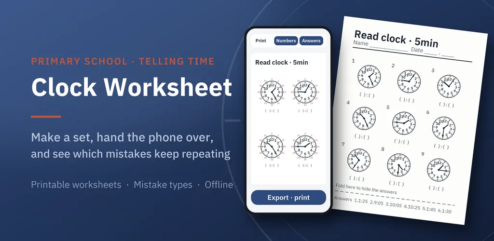
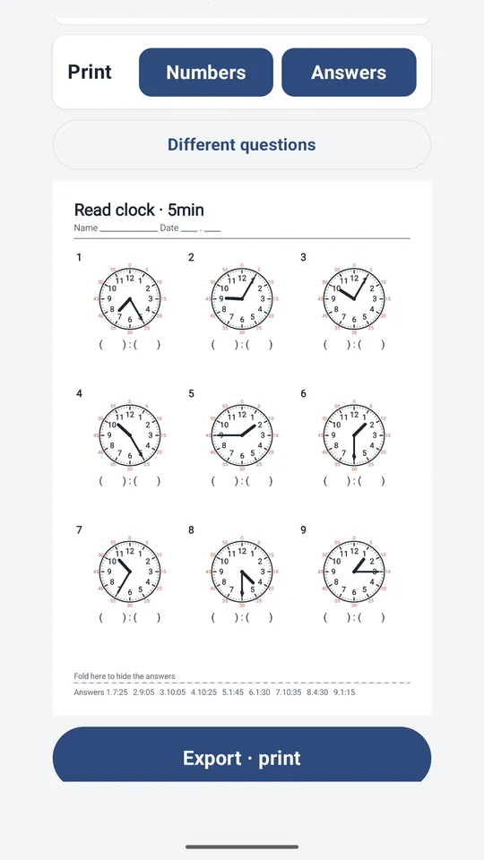
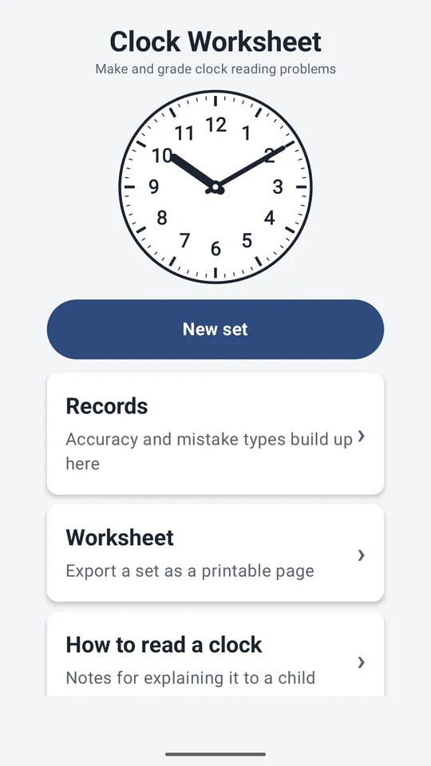
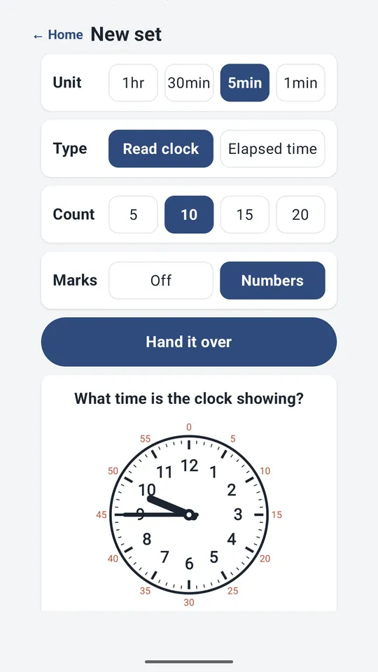
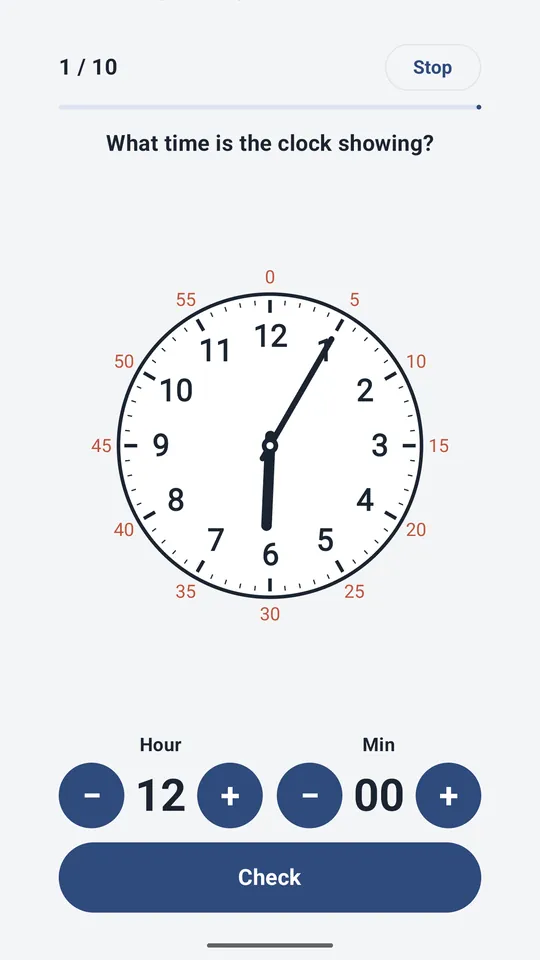
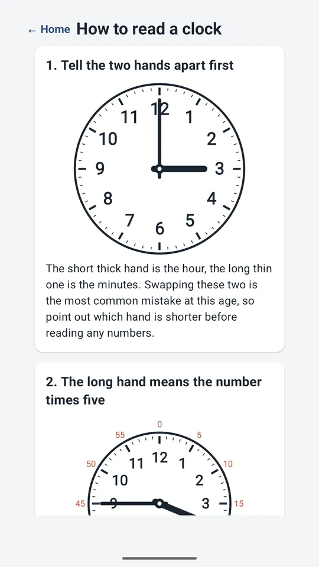

Clock Worksheet: Tell Time
Create and grade analog clock worksheets. See which mistakes keep repeating.






About this app
A tool for making analog clock reading problems, grading them, and keeping track of what went wrong.
Instead of hunting for printable worksheets, generate as many as you need.
- *Make a set, then hand the phone over**
Pick a type and how many questions, then tap to hand it over. The solving screen opens.
When it is done, the results come back to you. Answers are set with large plus and minus
buttons, so fumbling with a keyboard never gets in the way of reading the clock.
- *It tells you which mistake was made, not just the score**
Wrong answers are compared against the correct time and sorted by cause.
· Hour and minute hands swapped
· Hour hand misread — reading 3:50 as 4:50, the most common one
· Just-before-the-hour misread — reading 2:55 as 3:55
· Miscounting by fives — landing one mark off
· Elapsed time errors — getting stuck where 60 minutes becomes an hour
Once you can see what keeps repeating, you know what to practise next.
You can generate a new set targeting just that type.
- *Print it out**
Export any set as a single page image. Print it or send it in a message.
The answer key sits on the bottom line, so it can be folded out of sight.
- *Levels**
Pick a unit - one hour, half hour, five minutes, or single minutes - and a type: reading the clock, or elapsed time.
Turn the minute numbers on while it is new, then turn them off.
- *Records stay on this device**
No account. No sign in. Nothing is sent to a server.
No personal data permissions are requested - not photos, not contacts, not location.
Only an optional notification permission is asked for, and declining it changes nothing.
Accuracy and mistake types are stored only on this device and can be cleared at any time.
- *How it was built**
The level order follows the primary school unit on telling time in the Korean 2022 curriculum.
Problems and answers are computed by the app itself, so no bad answer data creeps in.
This app is independent and not affiliated with any education authority.
Results vary from learner to learner.
A banner ad at the bottom of the screen, plus a full-screen ad when you generate a set
or export a worksheet, keep the app free.
There are no ads on the screen where the child solves problems.
Android · free with ads · Developer: RealTunaLove · Store listing in 17 languages
Background story: why I built it